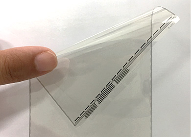
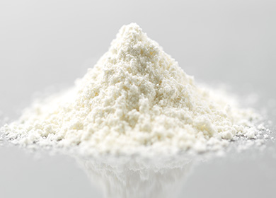
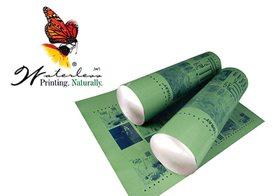

電子情報材料関連技術部署
電子情報材料事業本部は、電子材料事業部門と情報材料事業部門から構成されています。当本部は東レが「重点4領域」の一つとして捉える「情報・通信・エレクトロニクス」分野において「先端材料の拡大」の牽引役を担う本部の一つとして、スマートフォン、薄型テレビ、自動車、印刷・出版物などに用いられる素材・材料を、お客様が必要とする性能でタイミングよく提供するために製品開発を推進しています。
電子材料技術部
電子材料技術部は半導体用接着シート、高熱伝導接着シートなどの実装材料ファルダ®、プラスチック光ファイバ レイテラ®の技術開発を推進しています。
エレクトロコーティング剤技術部
エレクトロコーティング剤技術部は感光性ポリイミドコーティング剤 フォトニース®、半導体用ポリイミドコーティング剤 セミコファイン®などエレクトロコーティング剤の開発を手がけています。
アプライドペースト技術部
アプライドペースト技術部は、感光性機能材料 レイブリッド®、シンチレータ、セラミックス トレセラム®など幅広い用途の製品を開発しています。
液晶材料技術室
液晶材料技術室はスマートフォン・車載ディスプレイなどに用いられる中・小型液晶パネル用カラーフィルター トプティカル®の開発をはじめ、カラーフィルター用ペースト材料、タッチパネル用コーティング剤、クリアコーティング剤（NSシリーズ、フォトクリア®）などの開発、さらには加工装置の技術開発に至るまで、トータルソリューションを意識した製品開発を進めています。
印写材料技術課
印写材料技術課は、東レの高分子化学と樹脂分野における、豊富な技術蓄積を元に開発された感光性樹脂凸版印刷版 トレリーフ®や、湿し水不要で印刷工程において廃液を出さず、環境に優しいオフセット印刷版である 東レ水なし平版®など、あらゆるニーズに対応した多種多様な品揃えの印刷版の技術開発を行っています。

レイブリッド®を用いたフレキシブルタッチセンサーパネル
従来電極に比べて①低抵抗、②優れた視認性、③良好な屈曲性、等の特徴を持ち、従来にないフレキシブル電極として注目されています。

有機EL用材料
有機ELディスプレイの省電力化に貢献しています。

東レ水なし平版®
湿し水を使わずにオフセット印刷が可能な印刷版材。高品質な印刷が容易に実現できるため、生産性向上とコスト低減に大きな力を発揮し、また印刷工程において廃液を発生させないため、環境保全にも貢献しています。